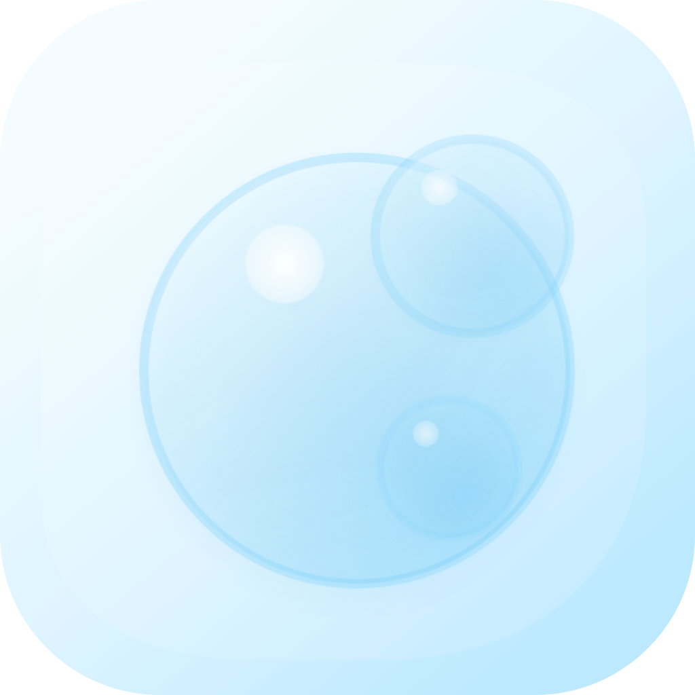

工具箱
━
✕
🖥 屏幕工具
📸
截图
全屏截图并保存
⇧⌘S
🎨
取色器
提取屏幕任意位置颜色
⇧⌘C
📋 办公工具
📋
剪贴板
查看和管理剪贴板内容
📝
记事本
快速记录和编辑文本
⇧⌘N
🔢
计算器
科学计算器
⇧⌘K
📁 文件工具
📁
文件筛选
按日期筛选并复制文件
📊 表格工具
📊
悬浮表格
类Excel表格 常驻桌面
🌐 翻译工具
🌐
翻译
百度翻译 多语言互译
⇧⌘T
🔧 开发工具
🕐
时间戳转换
时间戳与日期时间相互转换
⇧⌘U
{ }
JSON 查看器
JSON 树形展开/收起格式化
⚙️ 系统工具
🖥
系统信息
查看CPU、内存等系统状态
点击复制颜色值